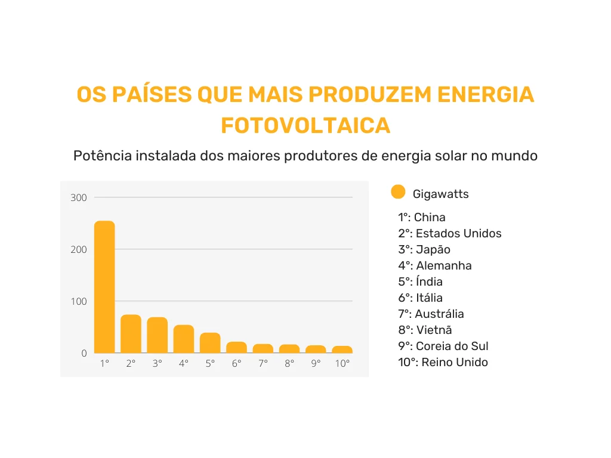

Energia Solar
Usina de Energia Solar Ivanpah, California.
Energia Solar significa que a luz do sol não é apenas o que define dia e noite, ou que os raios solares não estão ali somente para aquecer a Terra.
Mas também que tudo isso pode se tornar energia limpa e renovável, transformada através do poder do sol. Ela é considerada renovável e limpa, pois sua fonte nunca se esgota, e sua produção causa pouco impacto ambiental.
Quando a luz do sol incide sobre os painéis, a energia é suficiente para movimentar elétrons, gerando eletricidade.
A energia solar é gerada através do aproveitamento da radiação solar, que pode ser convertida em eletricidade ou utilizada para aquecer substâncias. Existem duas principais tecnologias para a conversão da energia solar: os sistemas fotovoltaicos e os sistemas de aquecimento solar.
Os sistemas fotovoltaicos utilizam células solares, geralmente feitas de silício, que convertem a luz do sol diretamente em eletricidade. Quando os fotões da luz solar atingem as células, eles excitam os elétrons do silício, criando uma corrente elétrica.
Essa corrente gerada é então capturada e pode ser usada para alimentar equipamentos elétricos ou ser armazenada em baterias para uso posterior.
Da seguinte forma elas funcionam:
Funcionamento dos painéis solares.
Vantagens e Desvantagens
A principal vantagem da energia solar é a sua capacidade de gerar eletricidade de forma limpa e sustentável, reduzindo a dependência de combustíveis fósseis e minimizando os impactos ambientais associados à geração de energia.
Ao aproveitar a luz do sol, que é uma fonte abundante e renovável, a energia solar contribui para a diminuição das emissões de gases de efeito estufa e ajuda a combater as mudanças climáticas.
Mas apesar de seus beneficio este método possui fraquezas, a principal desvantagem é a intermitência da geração de energia solar, que depende da disponibilidade de luz solar; em dias nublados ou durante a noite, a produção de energia é significativamente reduzida.
Isso pode exigir o uso de sistemas de armazenamento ou fontes de energia complementares para garantir um fornecimento estável e confiável.
Energia Solar no Brasil e no Mundo
Existem diversos exemplos de projetos deste tipo de geração de Energia Solar no Brasil e no mundo.
Dentre as as fontes de energias limpas a Energia Solar é uma das mais populares.
Com a crescente demanda por mudanças nos meios energéticos a energia solar faz um papel crucial nesta transição.
O fato de a energia solar ser mais barata quando comparada a outras fontes de energia limpa tornam ela uma boa escolha para países ou indivíduos que desejem
colaborar com os esforços contra mudanças climáticas.
Isto se reflete no crescente numero de residências e condomínios utilizando este método.
Até o momento a maior usina solar do mundo é a Bhadla Solar Park.
Localizada no estado de Rajasthan, na Índia. Visa fornecer energia para a crescente população e industrias da região, mantendo os esforços ambientalistas.
Esta usina possui uma capacidade instalada de mais de 2.600 megawatts (MW) e cobre uma área de mais de 14.000 acres.
A Bhadla Solar Park é um exemplo significativo do compromisso da Índia com a energia solar e suas metas de energia renovável.
Entre os líderes, a China se destaca como o maior produtor de energia solar, com uma capacidade instalada que ultrapassa centenas de gigawatts.
O país não apenas lidera em capacidade, mas também é um dos principais fabricantes de painéis solares.
Os Estados Unidos ocupam o segundo lugar, com estados como Califórnia e Texas liderando a adoção da energia solar, impulsionados por políticas de incentivo e uma crescente conscientização sobre as mudanças climáticas.

Grafico de maiores produtores de Energia Solar.
Exemplos de Usinas
Usina Solar Bhadla Solar Park, India.
Bhadla Solar Park.
Localização: Rajasthan, China.
Capacidade: Geração de até 2.245MW de energia.
Projeto Huanghe Hydropower Golmud Solar Park.
Localização: India.
Usina Solar Huanghe Golmud Solar Park, China.
Huanghe Golmud Solar Park.
Localização: Golmud, China.
Capacidade: Geração de até 2.200MW de energia.
Projeto Huanghe Hydropower Golmud Solar Park.
Localização: China.